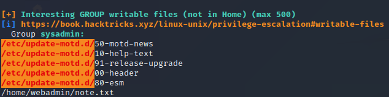

External Recon #
Welcome to my first box and writeup since my OSCP. We start with a nmap scan as usual:
Website #
Checking the website it seems like somebody already defaced the website.

We find a little hint in the sourcecode.
A google search on “webshells + Xh4H” reveals a github repository with a bunch of webshells. And sure enough we try all of them on our target.

The smevk webshell works!

Checking the github repository for credentials reveals admin:admin in the config.

After logging in the next step was to upload a propper php-reverse-shell to get some sane control over the machine.

I created a nc listener on port 9001 and called the reverse-shell via the browser.

User PrivEsc #
As seen in the above screenshot, we have webadmin permissions. So let’s go and check his home directory.

The user Sysadmin left a note about a tool webadmin might want to practice with.
Running sudo -l leaked the tool in question and the info that we can run it without the password from Sysadmin.
Futher investigation reveal more useful information. In the history-file you can see how the command was used by the attacker that defaced the box.

It looks like a .lua file is needed and can be passed as an argument to the luvit tool from “sysadmin”. I checked the
gtfobins website to see what I can do with lua.

After creating a file with os.execute("/bin/bash") as content and naming the file privesc.lua, I was able to privesc to Sysadmin and capture the user flag.
Enumeration of Sysadmin #
With the new privileges at hand I uploaded two of my goto tools to the system. LinPEAS and pspy64. Neither disappoint in this scenario.
I sifted through the LinPEAS output and found some very promissing information.

Pspy64 confirmed that something is about the motd (motto-of-the-day) files as they are constantly restored by a cronjob.

Before we move on to root the box I went and created an ssh-key for sysadmin to get a better and more stable shell. After logging in I noticed the custom banner from the initial attacker.

Root #
So after enumerating the Sysadmin-User I checked the motd files. The 00-header file was particilar interessting.

If you check the very last line you can see that it’s the same we saw after using our ssh-key for Sysadmin. The privesc path should be clear at this point.
The motd files are essentially bash-scripts and Sysadmin can edit them. But they are run by root once you log in via ssh.
So I appended a reverse-shell to the 00-header file and had a listener ready to capture the shell.
As we know through our enumeration, the file will be restored every couple of seconds. So we need to be quick.
Append the shell, login as Sysadmin and capture the shell.


Easy as that. :)
See you in a bit!
x41